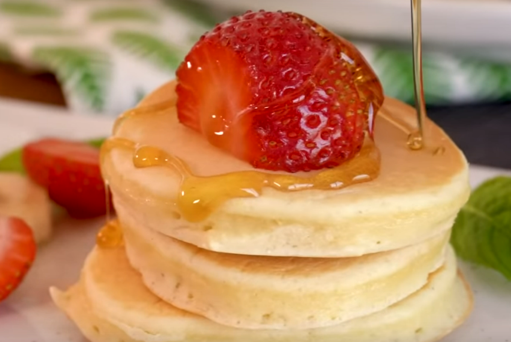

Bear Grill's Pancake

Stuff to make with
- 2 eggs
- 2 tbsp granulated sugar
- 200 ml milk
- 1 + ¼ cups all-purpose flour
- 3 tsp baking powder
- 2 tsp vanilla powder
Steps
- Beat THe life out of 2 eggs and add in sugar i recommend 3 if you like sweets
- Add the rest of the stuff into the mixture and beat the life back into the mixture untill batter is smooth as hell .
- Oil up that pan and heat it i like medium
- OK listen up this is the most important time of your life Care fully and i mean care fully pour 1tbsp of batter on the pan now repeat it
- Now sit back and after a hard days work look at the bubbles let them remind your of your childhood and when they pop allow yourself to experience whiplash
and flip the pancake so you dont have to suffer anymore cook untill the other side is golden brown as well .
- Repeat untill you canot do so anymore.
- Now stack them up onto the plate serve it with maple or melted chocolate AND ENJOYYYYYYYYYYY